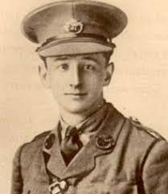
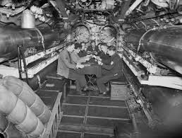
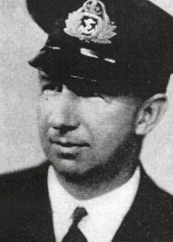
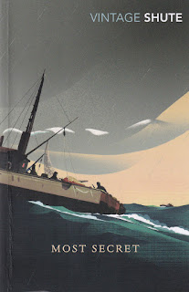
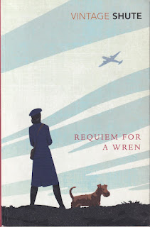

 |
| Frederick Norway (Nevil Shute Foundation) |
{kind=link}
Nevil Shute Norway was born in 1899, part of the generation whose schooldays were overcast by the ever growing Roll of Honour as younger schoolmasters and older contemporaries died in the First World War. As a teenager he came to believe that ‘I was born for one end which was to go into the army and do the best I could before I was killed.’ (Slide Rule) His older brother Frederick did exactly that, leaving university in his first year to join the Duke of Cornwall’s Light Infantry and arriving in France at the end of December 1914. Fred survived the 2nd battle of Ypres in the spring of 1915, but was wounded in trenches near Armentieres and died aged 19 in Wimereux hospital with his mother by his side.
The Norway family were living in Ireland then:
Arthur Norway was secretary to the Post Office and the depleted little family
was thus directly involved in the Easter Rising of 1916. Arthur was briefly
imprisoned in Dublin Castle as Patrick Pearce read out the Independence Declaration
in front of the Post Office building. When that building was burned down the
family suffered a final private loss as all of Fred’s letters from France, his
uniform, his sword and the three handkerchiefs in which he had worked his
mother’s initial were destroyed.
Nevil had left school at the end of 1916 and
initially struggled to gain entry to the Royal Military Academy in Woolwich for
training as a gunner with the Royal Flying Corps. He was badly hampered by a stutter,
failed to gain a commission and finally joined the Suffolk Regiment as a
private in the summer of 1918. His battalion was never sent to France; instead
he spent the last months of 1918 on funeral duty in Kent as thousands of
returning soldiers (and others) died of Spanish flu.
Through the 1920s and 30s Nevil developed a love of
both sailing and flying. He studied engineering, learned to live with his
stammer and built an extraordinarily interesting and entrepreneurial career in
the developing aviation industry. He was not, however, a great administrator
and by 1938 had been sacked from his business and was settling to life as a
full time novelist. A film option on his fourth novel Ruined City had
enabled him to commission a yacht from designer David Hillyard and he was living
comfortably near Portsmouth with his wife and daughters. What Happened to the Corbetts? Nevil Shute’s fifth novel, published
in 1939, foresees the south coast bombing of 1940.
 |
| Inside HMS Snapper |
{kind=link}
Meanwhile Nevil Norway maintained links with his former colleague Sir Dennistoun Burney and acted as his technical adviser in meetings with the Admiralty to promote Burney’s Doraplane and Toraplane (gliding bombs and torpedoes). Shute was writing Landfall, a novel whose plot hinges on the possible friendly-fire destruction of a British submarine by a young British pilot. Could he have known about the December 1939 attack by an RAF Anson plane on the S-class submarine HMS Snapper or the confused beliefs that this was a German attack and the Anson had actually attacked a U-boat -- though none were reported in that area on that day? It’s very close to the novel though incidents like that were naturally not publicised. Probably Shute didn’t need an actual event as problems of aerial identification were commonplace. Very early in the war the Admiralty needed to decree that its submarines should never travel unescorted on the surface as they were simply too vulnerable.
 |
| Nevil Norway (Nevil Shute Foundation) |
{kind=link}
Nevil Norway was over 40 and could reasonably have
continued to combine writing and technical advice in a civilian capacity. However,
the experience of Dunkirk moved him deeply as it did so many others. The Navy
put out a plea for ‘elderly yachtsmen’ to volunteer for active service and by
June 1940 Norway was a Temporary Sub-lieutenant arriving for training at HMS King
Alfred at Hove and expecting to be sent off in command of a trawler or one
of HM armed yachts. Instead he was spotted, promoted and sent to the recently
formed Inspectorate of Anti-Aircraft Weapons and Devices before he had time
even to take delivery of his RNVR uniform. He wrote later that he ‘must have
been the only executive Lieutenant-Commander in the Navy who had never attended
Sunday Divisions.’ (Slide Rule)
Despite its title the ‘Inspectorate’ was an
experimental group, almost entirely staffed by RNVR officers with civilian
academics, inventors, engineers and research scientists – many of whom soon
found themselves bundled into naval uniforms, though with a green stripe
between the braid on their sleeves, indicating that they had no direct
connection with the sea. Norway, though not a green-striper, discovered that
the only time he got on the water was when he was taken out on a trawler ‘to
see my things go wrong’.
Much of his early work within the group was to
enable small vessels and merchant ships to defend themselves – with rocket
propelled cables and parachutes for instance – but the department also
developed nakedly aggressive and quite horrific weapons. Landfall
includes a brilliantly observed scene when the young pilot is engaged in
demonstrating a new type of bomb to be delivered at high speed against
battleships.
‘The naval officers stood around in little groups
discussing in low tones. What they had seen disturbed them very much. Ships
were their homes, their livelihoods, their very lives. It hurt and distressed
them to see a ship treated in the way that that one had been treated.
Somebody said ruefully: “There wouldn’t have been
much left of her if that stuff had been loaded.”
Another said, with doubtful optimism: “I should
think the multiple pom poms would have got the machine…”
The discussions ranged in low uncertain tones all
the way back to the harbour.’ (Landfall p157)
They hate the weapon, but they also want it. Later the bomb explodes inside the aeroplane.
‘On the trawler the naval officers stood stupefied.
The detonation blew the belly of the machine out downwards and a sheet of flame
shot upward from the fuselage, coloured a cherry red against the pale blue sky.
The big monoplane staggered, practically stopped. The a round mass that was an
engine fell from her port wing and went down to the sea, leaving a great plume of
black smoke behind it in its fall.
The wrecked bomber put its nose up and the port wing
burst into flame. Then the wings crumpled up and the whole port wing parted
from the fuselage, and hung for a while suspended by the hot air of its own
combustion. The remnant of the fuselage and the starboard wing dropped
backwards in a tail slide, and plunged down to the water, gathering speed at
every moment of its fall…’
It’s a wonderful piece of writing, combining intense
visual perception with scientific understanding and the tangle of human
emotions. A rescue pinnace is launched from the RN cruiser; the trawler too
turns towards the wreckage. Professor Legge, the civilian inventor is the first
(in the novelist’s structure) to think specifically of the pilot.
‘He had seen a boy killed before his eyes, a boy he
had known, talked to, consulted with, a young man that he had admired for his
light-hearted courage. And his one reaction was a feeling of relief.’
Legge hopes that it is over; that he won’t be
required to use his intellect and passionate mathematical skill in the service
of killing any more. But of course he is wrong.
Shute’s next wartime novel was the humane and
delightful Pied Piper (1942) where an old man rescues a trail of
children through the frightening confusion of the fall of France. It was
conceived to while away a long train journey in company with Norway’s boss, the
brilliant Canadian Charles Goodeve. Pied Piper was written from the Oxford
and Cambridge club in Pall Mall where Norway lived to be close to his work. It
takes the format of a tale told during an air raid and ends, ‘I went out and the glass crunched tinkling
beneath my feet’.

{kind=link}
The means of attack is new and horrific as the
narrator is forced to discover.
' ‘‘It would make a very nasty burn?”
He laughed shortly. “That’s putting it mildly, I
don’t believe it would ever heal at all.”
“I mean just a little splash, about the size of ---
that,” I said.
“Small or large it would go septic straight away.
And it would go on going septic for quite a long time.”
“It’d heal in the end?””
“It might do, if it didn’t start a cancer.”’
When he understands what is being proposed (by a
young chemist who normally works in the cosmetics industry), he feels he must
consult the Hague Convention.
‘I read it through that evening, But in those far-off
days before the last war nobody had even thought about flame-warfare, so it
seemed […] There was no paragraph to say that if you hurl a jet of blazing oil
against the Germans you must use clean oil.
I took the Convention back to the library and went
to bed, but I didn’t sleep very well.’
(Most Secret p 205)
Most Secret
was published in 1945, after the war had ended. In 1944 the DMWD made a major
contribution towards the success of the Normandy landings. Lieutenant-Commander
Norway developing the rocket-propelled grapnels that enabled some US troops to
scale the cliffs behind Omaha beach.
Finally he got to sea as an observer. The work of the department slowed
and Norway / Shute was seconded by the RNVR to the Ministry of Information. He was sent to India and Burma but his reports
failed to please his new bosses. He was back in Britain by the time the most horrific
weapon of all was dropped on Hiroshima. In 1957 Shute responded with his novel On the Beach

{kind=link}
‘I wondered a little at the decency of my home after
all I had read during the night. Even into this quiet place the war had reached
out like the tentacle of an octopus and touched this girl and brought about her
death. Like some infernal monster still venomous in death, a war can go on
killing people for a long time after it’s all over.’ (Requiem for a Wren p 246)
I remember my mother’s increasingly evident post-traumatic
stress as she aged and her coping mechanisms crumbled. Remembrance Sunday was a
reliable trigger for a crisis. As I watched this morning’s ‘socially-distanced’
Cenotaph service, the empty spaces along Whitehall seemed full of ghosts. The
usual parade of veterans, the spectators and the bands, can be felt as a celebration
of survival. Today’s event spoke only of absence and loss.